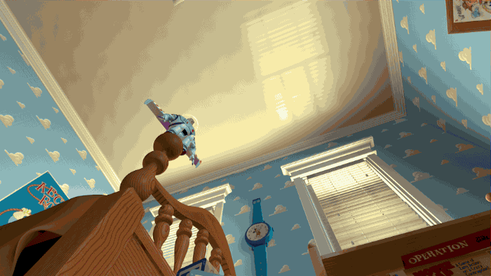
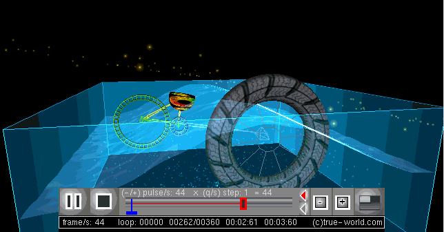

319 - Creating 3D Digital Animation
Navigation
- Animators
- The 12 Principles
- Key Frames
- Graph Editors & Interpolation
- Blocking
- VFX for Films VS Games
Animators
(I) - Choose 3 famous animators to research and write about.
Matt Groening
Matt Groening is a writer, film producer, cartoonist and animator, best known for shows such as The Simpsons and Futurama. As a cartoonist first and foremost, it follows that the bulk of works Groening is involved with are 2D, cartoon-styled animations. This style lends itself well to the sort of design quirks and concepts familiar to cartoons, and Groening's particular writing style and humour bring a sense of depth and recognisability to his works that made them stand out right away, and led to several becoming iconic series.
Nick Park
Nick Park is an animator and film producer who is known for his work on works such as Wallace and Gromit, Shaun the Sheep, and Chicken Run. He specialises in Claymation, a type of 3D stop-motion animation that uses clay dolls and dioramas for characters and environments. While Claymation itself is already a unique choice, especially using it for large projects like films, the particular art style on display in his works sets them apart from others, and makes them immediately recognisable.
Rebecca Sugar
Rebecca Sugar is a writer, animator and songwriter, best known for their work as a storyboarder and writer on Adventure Time, and as the creator of Steven Universe. Most of the works Sugar is involved with animating or storyboarding for, or otherwise contributing to are 2D cartoon-style animations. Being the first nonbinary person to independently create a series on Cartoon Network, and being dedicated to creating family-friendly work featuring queer representation in order to bring positive exposure to young people who might not find it elsewhere, Sugar is a unique figure in animation in several ways.
The 12 Principles
(I) - Explain how each of the 12 Animation Principles are being applied in this Toy Story animation

[!DISCLAIMER] The purpose of the 12 Principles of Animation was that they were principles referenced by 2D animators at Disney. They are not really designed to be something the viewer can easily look for; rather being something you think about when creating your own animations (or in the case of appeal, character designs). Even disregarding the fact that some of the 12 Principles simply do not apply to 3D animation, to explain "how each of the principles are being applied" in a single, short clip of an already-finished movie borders on Sisyphean. Instead, I've chosen to focus primarily on those that are applicable and observable.
Staging is one of the most noticeable principles at play here. In the first shot where Buzz first jumps, the perspective used makes every object appear to point to the upper middle of the frame, naturally drawing the eye there. Additionally, the blank ceiling makes the movement even clearer and gives him a clear silhouette, which when combined with the slow in/slow out that is used to build anticipation for his fall (which displays both timing and exaggeration), makes it appear for a moment as though he is flying. The appeal that Disney/Pixar used in their character designs is highlighted here, as the striking plane-like silhouette of Buzz as a character is what helps this scene make the references it does.
Something similar is done in the next shot, albeit more subtle. The way this shot is staged gives the appearance of a compositional "visual floor" full of large, dark and static background elements that the viewer won't pay much heed, contrasted with the emptier and brighter top-right sections of the image. This is the area Buzz will mostly move through, and so the lack of clutter here once again allows that movement to appear much clearer. This kind of staging can be seen in a lot of action or quick-moving scenes, not only in this scene, and not only in Toy Story, but it's quite nicely demonstrated here.
A neat camera/staging trick is also used to connect the two shots even though they are completely different angles; note that when Buzz jumps in the first shot, he moves upwards across the screen in an arc, and as he moves off screen he moves down and right, which is the same angle and direction he maintains in the second shot, perfectly following through that arc and maintaining the momentum. All of this combines into a scene where the viewer's eye naturally follows Buzz between cuts and up into the next shot. It's also worth noting that the aforementioned combination of slow in/slow out, anticipation, timing and exaggeration are used in this shot too, as Buzz slows down while in contact with the ball to once again use timing to exaggerate the force and weight behind the motion and build anticipation for the proceeding bounce.
Brief discussion of the principles that were not mentioned: - Squash and stretch is indeed being used, but that's about it. The ball squashes as Buzz lands on it and stretches slightly once he bounces off, establishing through cartoonish clarity how bouncy said ball must be. It's not ground-breaking, unless by "ground-breaking" you're referring to the fact that it's the first 3D bouncy ball Disney made.
-
Secondary action is visible in the first shot, although subtle; while Buzz's primary action, his jump, is ongoing, there is also a secondary action involving his arms, which spread out before moving to a diving pose. This secondary action doesn't simply work to create a natural feeling movement, but also subtly emphasises different parts of the motion. I've previously discussed how timing, silhouettes, etc. were used to give viewers a momentary impression that Buzz is flying, before subverting that expectation and instead turning it into a dive, and this is once again reinforced in the secondary action here. Though secondary action isn't supposed to take the front and centre, it has an equally important role in helping silently tell the story of a scene.
-
Follow-through/overlapping action can be seen quite clearly in the second shot. Here, Buzz stops falling, but his arms continue to move and spin around, reminding the viewer how Buzz is indeed a toy with ball joints, and interacts with physics as a toy would. This can be seen throughout all of Toy Story; it can be considered part of the appeal of the toy characters and setting, and is able to simultaneously gives a sense of physical realism while still being a deeply cartoonish exaggeration of a typical character movement.
-
There are no solid drawings in Toy Story. They were surely used in the 3D modelling process, but they are not at all observable here.
-
Straight ahead/pose-to-pose is a term that really only refers to 2D animation, and is also simply unobservable. Perhaps the animators really did move Buzz frame-by-frame like their 2D division drew every animation cel, but unless Disney P. Ixar himself descends upon my workstation this very moment with a message, we shall never know.
Key Frames
(I) - Explain what key frames are and how they are useful when creating animations
Key frames are an important step in the 3D animation workflow, where a selection of 'landmark' frames are created (this is also part of the blocking process) to outline the broad strokes or key poses in a movement, before the rest of the frames are then procedurally added in between (literally called in-betweens) to create the final animation. This is useful for breaking down a movement into more understandable portions, making complex actions or detailed animations easier to manage, as well as speeding up the \ process and being able to produce exaggerated results that wouldn't be possible through motion capture.
Graph Editors & Interpolation
(I) - What is a graph editor and how do animators use the graph editor when animating?
The graph editor is a tool that allows the user to adjust animation curves and interpolation, allowing an higher degree of control over the broad movements, speed and flow of an animation. It will typically display the timeline of an animation, as well as keyframes, key positions, and various controls. Animators can use the graph editor to tweak their animations or manage keyframes by changing where in the timeline they land, setting a different interpolation type, or manually moving the animation curve to their liking, as well as add new keyframes for finer control over specific points.
(II) - Explain what interpolation is and the difference between Linear and Smooth Interpolation
Interpolation is the process of filling in the frames between one key frame and the next, similar to the traditonal process of drawing in-between frames. It's the difference between snapping to each key frame, and smoothly moving between them, and different kinds of interpolation will make those in-betweens flow differently. Linear interpolation for instance means that the whole thing is linear - there's no acceleration or deceleration, it simply moves from one to the other and might look a tad janky if used in the wrong places. Meanwhile, smooth interpolation has a subtle slow-in slow-out effect at the start and end of each point that makes it appear "smoother" to the eyes.
Blocking
(I) - Explain what Blocking is in terms of creating animations.
Blocking is somewhat similar to creating keyframes, but happens before creating the final animation, being the part of the 3D animation workflow where all the basic key poses, placements and composition of a scene is laid out. The main differences between blocking and keyframing other than their placement in the animation roadmap are that blocking forgoes using any interpolation, keeping only the key poses and serving as a kind of detailed working storyboard, while also including some extra frames to explain or establish the timing of particular actions or events, which isn't necessary when keyframing since those things should already be established and now just need to be expressed for the final product.
Procedural Animation
 (oh, procedural animation wikipedia gif, we're really in it now)
{kind=link}
(I) - Explain what procedural animation is, and why one might use it in a game design project.
Procedural animation is a kind of computer animation technique that involves automatically generating the movements required for an animation in real time. Unlike motion capture or keyframed animation, procedural animation uses programming logic to dynamically determine where and how bones should be moving, which is useful in a lot of situations in game design where environmental factors could make premade animations look strange on their own. Since games have a lot of moving parts and animations are used in all sorts of contexts and spaces, procedural animation is a way to eliminate the need for making a ton of slightly-different copies of the same animation for each different circumstance.
(II) - Give three examples of where procedural animation could be used in a game.
One common use for procedural animation is for movements that need to track a moving object, such as NPCs who are supposed to be looking towards, or aiming their weapon at the player. NPCs and players are always moving around in relative position to each other, and creating a separate animation for every possible angle and situation would range from extremely tedious to impossible, not to mention the hit to performance. Rather than do that, game devs instead use procedural animation to manipulate the relevant bones to make the NPC face where they're supposed to.
Another ideal example would be the infamous ragdoll physics. When players or enemies fall over and/or die, it's not uncommon to see them suddenly flail or go limp, interacting with all the level collision on the way down. This too is done with procedural animation, and looking at different implementations of ragdoll physics is a great way to observe how fully procedural animations can either look super realistic or completely unnatural. The more realistic implementations of ragdoll physics will impose certain limits on the movement range of each bone to mimic how real bodies work, while a more cartoony or silly game might freely ignore such rules, and let the natural jank of the physics simulation take over, or take steps to ensure the animation always looks exaggerated.
Procedural animation is also used for things like walk cycles and interaction with objects, such as if a character needs to walk over rocky terrain, go up some stairs, or pick up an item from the environment. Solely using baked animations for these actions could result in the character's hands or feet clipping into the world or missing the target object entirely, but through procedural animation, you can use code to determine the correct placement for the character's feet/hands, and use IK chains so that the bones controlling their legs/arms will move accordingly. This is especially ideal for games with large, open, and/or heavily interactive words, such as climbing games - as well as games with characters that are difficult to manually animate all the time, such as insectoid creatures with a lot of legs.
VFX for Films VS Games
(I) - What is VFX?
VFX is short for "visual effects", and is a term that encompasses any fabrication, manipulation or enhancement of film. In video games specifically, there is no film to manipulate, but the essence is still the same; creating special visual effects that add style, interest, and clarity to a scene or area. Most VFX is done through computer-generated imagery or CGI, and may include use of particle effects, 3D models, shaders and more.
(II) - What are constraints used for in a character rig?
In live action films featuring VFX, it is applied in post, after filming has taken place. While some changes are made during and after VFX work, artists will usually know exactly what angle the camera is going to be at, and what will and won't be visible in the scene. On the other hand, since a large portion of 3D games lack railroaded and/or fixed cameras, the VFX made for video games will have to look believable and visually appealing from multiple angles.
Additionally, any VFX that takes place in gameplay has to not only render in real-time, but do so alongside the rest of the currently-loaded game, so optimisation becomes the main priority. Games that are able to run smoothly despite having high quality rendering and VFX have been heavily optimised to do so, meanwhile films are more freely able to have absurdly high-quality VFX while worrying relatively little about rendering cost or time, because they only have to be rendered once before the final product can be played smoothly on just about any device.